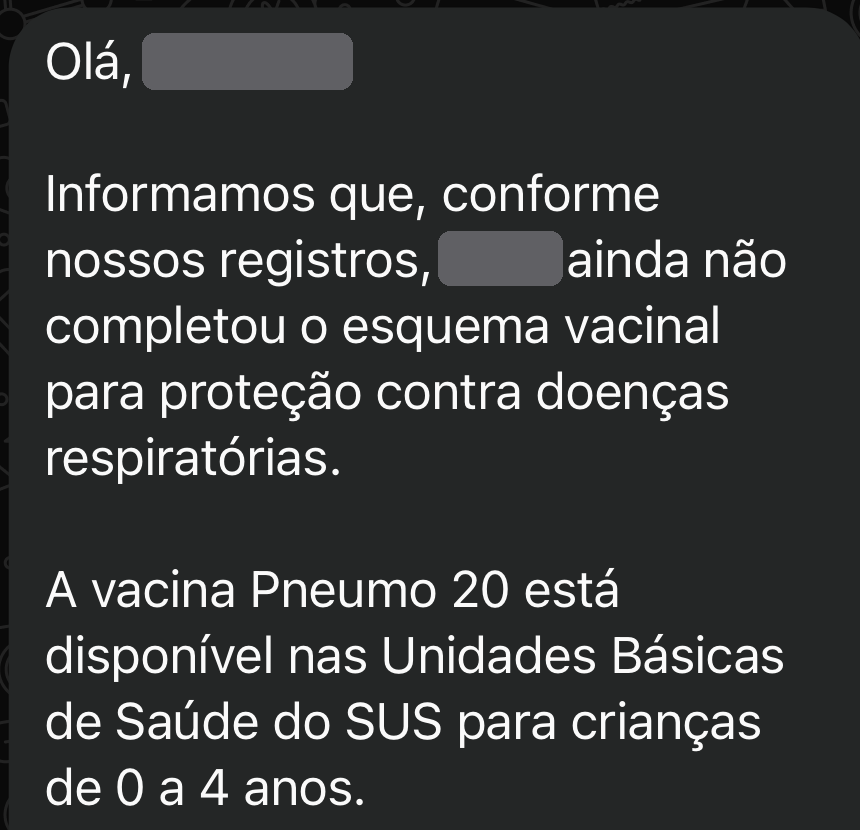

mãe, recebeu essa mensagem do GovBR?

Resumindo o que aconteceu:
O canal oficial do GovBR no WhatsApp mandou um aviso dizendo que a criança “ainda não completou o esquema vacinal” e indicando a Pneumo 20.
Só que o envio foi em massa: a mensagem chegou também pra muita família com a caderneta em dia.
Por isso, a mensagem sozinha não confirma atraso nem dose a mais.
“mas meu filho tomou a Pneumo 10...”
Se ele completou o esquema com a Pneumo 10 (2 doses + o reforço), o esquema está completo.
Ele não precisa de dose extra de Pneumo 20 só porque a vacina do calendário mudou.
a troca de vacina não “zera” o que ele já tomou.
pra quem tá começando agora,
No SUS, a Pneumo 20 é pra crianças menores de 5 anos que ainda não completaram o esquema. Esse é o esquema de transição, enquanto houver Pneumo 10. Crianças com algumas condições de saúde têm esquema especial: confirme com o pediatra.
a de papel ou a digital, no app Meu SUS Digital
pode desconsiderar a mensagem
leve a caderneta e um documento da criança na UBS
e só aplica se faltar alguma, conforme o calendário
A mensagem veio do canal oficial do GovBR, com o selo azul de verificado. O problema foi o envio pra todo mundo, sem olhar a caderneta de cada criança.
mas fica esperta:
Vacina no SUS é gratuita. Desconfie de qualquer mensagem que peça pagamento, senha ou código pra vacinar.
Tem muita mãe preocupada à toa hoje. Esse post pode tirar esse peso dela.
Fontes: Programa Nacional de Imunizações / Ministério da Saúde, Secretaria de Estado da Saúde de São Paulo e Secretarias Municipais de Saúde de Cuiabá e Ubatuba (outubro de 2026). Em caso de dúvida sobre a saúde do seu filho, procure a UBS ou o pediatra.